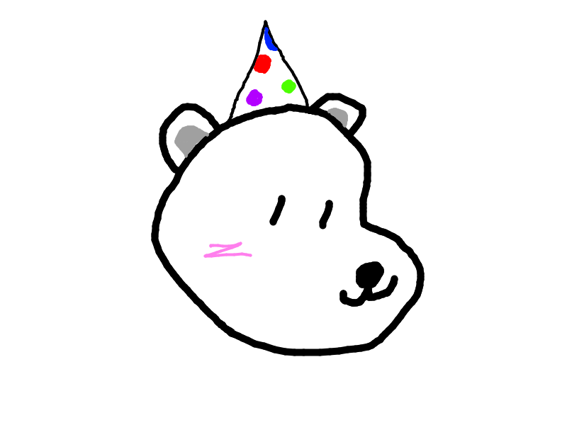

This is my Avatar!

This is Nora!
Created By Aaron Yoon P2
Nora is a synthetic being as a result of an RND experiement trying to prove that manmade intelligence is possible.
During this experiement, the base material (Par.Ty) was mixed with a special substance known as (Ha.T). The company under all of this,
NoR (an acronym for Notorious Research), is fairly new and this experiement is their first trial, hence why they dubbed this project NoR-A,
which was why the being was given the name "Nora".
The result of this experiement was what visibly looked like a polar bear with a party hat, though on the inside it is a much more
intricate magical system. Its inner workings are unknown since the specimen is still very new, though in the future it will be investigated further.
From the few tests, it is known (so far) that its favorite food is Spam Musubi. The employees at NoR greatly enjoy Spam Musubis as there is
a local shop nearby that sells it.
For now it resides in a testing facility over in Boston, though it seems to enjoy its life so far and does now show any signs of hostility towards anyone
or anything. It is a very joyous individual, and if it were to show any aggression, it will be tended to immediately. The technology of creating synthetic
life is still in its very early stages, however the employees are looking to replicate this experiement for future research.